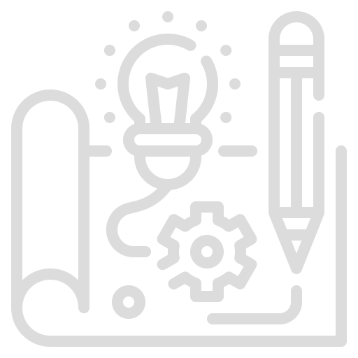
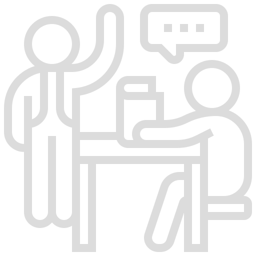
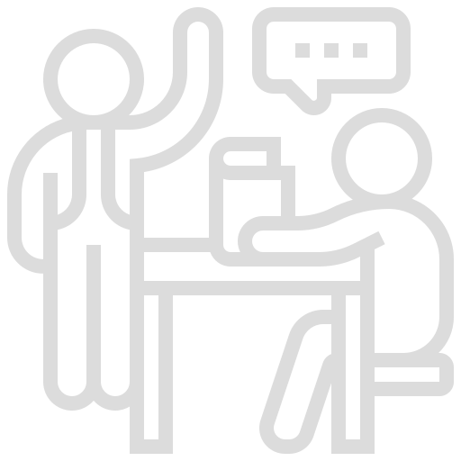

Prototyping
Debugging
I have the ability to rapidly prototype whole games or just core mechanics to suit your needs. This can help you save precious production time to see if the core of your game is enjoyable. The time range for completion can be as little as a day to a few weeks, depending on the scope of the project.
Need some help squashing some bugs? Or just another set of eyes to make sure you’re not going crazy? Maybe you’d just like some help with optimizations or gameplay design choices.
 

Game Framework
1 on 1 Tutoring
Do you actually want a solid foundation for your game? This goes beyond prototyping. This is where I will set up your game systems for you with ease of building on top of it.
Private tutoring is available. Hourly based.
Contract Work
Helping Out
If you would like my services for yourself, I am avaliable for remote only contract based worked. Rate can be hourly or project based.
I am avaliable on twitch, twitter and discord. I do tend to help out as much as I can when needed, feel free to reach out and we can work things out.